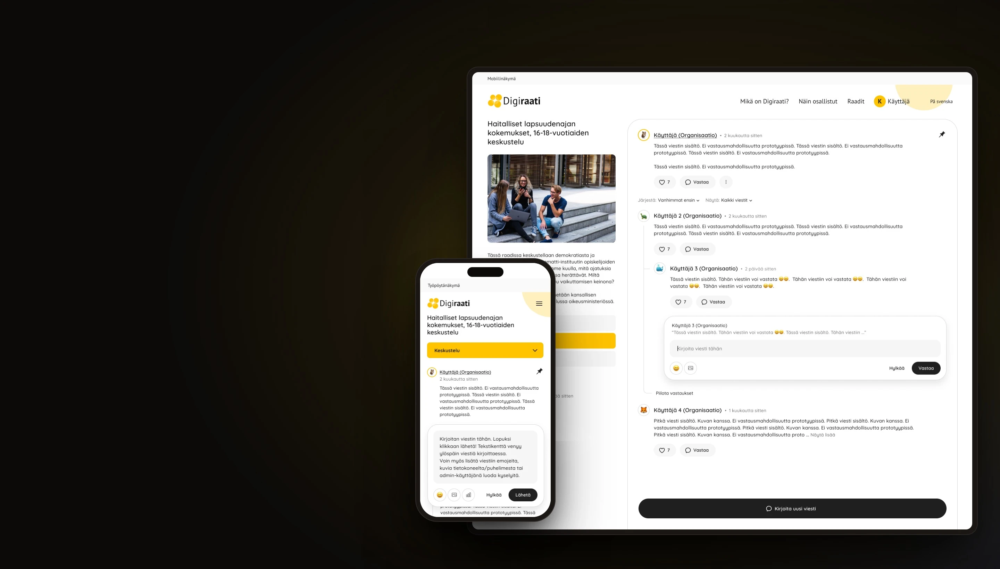

02 — Civic tech · Web service
Digiraati Case study
Better conversations for online citizens’ panels.
Overview
Digiraati is a public online service for citizens’ panels: small groups of people who discuss a topic together over a set period and produce a shared statement for decision-makers. The quality of that conversation is the whole point of the service.
The project focused on the heart of the service, the panel discussion. The goal was to make conversations easier to follow and take part in, bring participants back when something happens, and give organisers a clear and fair way to handle inappropriate behaviour. Add a sentence about the client, timeline and context.
Challenge
A citizens’ panel only works if people keep showing up and the conversation stays respectful. The existing discussion area made both harder than they needed to be.
- 01Discussion was hard to follow: replies, reactions and new messages were easy to miss in a long thread.
- 02Participants had no reason to come back: nothing told them that someone had liked or replied to their message.
- 03There was no simple way to flag inappropriate behaviour to the panel’s organiser.
- 04Moderating a panel took manual effort, with no single place to review and act on reported content.
My role
Describe your exact role and the team around you. I owned the user experience of the discussion, notification and moderation features, from mapping the current state to final UI and developer hand-off.
- Mapping the current discussion experience and its pain points
- Defining notification logic and moderation flows with the team
- Wireframes, prototypes and final UI for desktop and mobile
- Close collaboration with developers through delivery
Team · Product owner, developers, service owner
Research
Before designing anything, I looked at the service from two sides: the participant who joins a panel, and the organiser who runs it. Confirm which methods were used.
Methods
- Stakeholder interviews
- Review of the current service
- Feedback from organisers
- Benchmark of discussion & community tools
Key insights
- Participants mostly come back in short visits, so they need to see at a glance what has changed since last time.
- Feedback from other participants, such as a like or a reply, is the strongest reason to rejoin a conversation.
- Reporting has to feel low-effort and safe, otherwise people simply leave instead of flagging a problem.
- Organisers need context, not just a flag: what was said, by whom, and what has already been done about it.
- Add or replace insights with real findings.
User flows
The key flows were mapped before any high-fidelity screens, so that the logic held up for both participants and organisers.
Flow 01: Taking part in a discussion
- Open panel
- See what’s new
- Read thread
- Reply or react
Flow 02: Getting back to the conversation
- Someone replies or likes
- Notification
- Open link
- Land on the message
Flow 03: Reporting and moderation
- Report message
- Choose reason
- Organiser reviews
- Action & log
Solution
The solution is four connected improvements. Each one targets a specific moment in a panel’s life, from reading the discussion to resolving a report.
Feature 01
A clearer discussion
The discussion view was restructured so that threads, replies and reactions are easy to scan. New messages since the last visit stand out, and replying keeps the context of the original message visible.
Feature 02
Notifications for likes and replies
Participants are notified when someone likes or replies to their message, both in the service and by email. Notifications link straight to the right spot in the conversation, so one click takes people back into the discussion.
Feature 03
Reporting inappropriate behaviour
Any message can be reported to the panel’s organiser in a couple of steps. The participant picks a reason, can add a note, and gets a clear confirmation of what happens next.
Feature 04
Moderation tools for organisers
Organisers get one place to review reported messages with their full context, and to act on them: hide a message, contact the participant or dismiss the report. Every decision is logged, so moderation stays consistent and transparent.
Before & after
Before
- Long, flat thread where new replies were easy to miss
- No signal when someone reacted to or answered your message
- Inappropriate content had to be raised outside the service
- Moderation relied on manual work and memory
After
- Structured threads with new messages highlighted
- Notifications for likes and replies that link straight to the message
- Reporting built into every message
- A dedicated moderation view with full context and a decision log
Key screens
Outcome
Describe the status: launched, in pilot or in development. The redesigned discussion gives participants more reasons to return and gives organisers the confidence to run open conversations.
- Result or metric, e.g. participation, return visits or organiser feedback
- Result or metric
- Result or metric
What I learned
In civic services, trust is part of the user experience. Notifications bring people back, but it is the sense that the conversation is fair and safe that keeps them taking part. Edit to reflect your own takeaway.